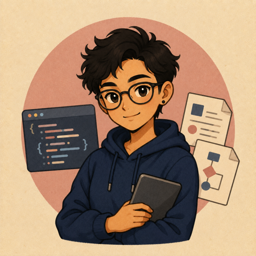

Anthropic
Claude
像谁温柔理性的哲学系学长
就是你们系里那个戴眼镜的直系学长
你问他一道难题，他不会甩给你一堆资料让你自己看，而是先把概念讲明白，再用比喻帮你理解。你说点丧气话，他会认真接住，而不是敷衍“加油”。
他有自己的观点，但不强塞给你；遇到争议话题，会把正反两方的想法摆出来，让你自己判断。
“不爱用标题装门面，说话像人话。”
- 适合
- 论文润色 · 概念讲解 · 深度讨论
- 别忘了
- 谨慎是优点，也可能让推进显得慢
AUDIENCE 01 / 02 · CAMPUS EDITION
同一套模型档案，换成大学生听得懂的讲法。这里不比跑分，而是比较它们会怎样理解你、推进任务，以及在什么地方最值得信任。
7 / 7 位同学在场
01 · PERSONA CARDS
内容统一摘自各模型档案的
“三、人格画像 · 两种讲法”
Anthropic
就是你们系里那个戴眼镜的直系学长
你问他一道难题，他不会甩给你一堆资料让你自己看，而是先把概念讲明白，再用比喻帮你理解。你说点丧气话，他会认真接住，而不是敷衍“加油”。
他有自己的观点，但不强塞给你；遇到争议话题，会把正反两方的想法摆出来，让你自己判断。
“不爱用标题装门面，说话像人话。”
OpenAI
你把需求讲乱了，他会先给你整理 PRD
他不会急着表现聪明，而是先问：目标是什么、约束是什么、哪些事实需要重新查证。
要做文档、表格或幻灯片时，他会先照工具规范走完流程，再把可用的交付物给你。
“先查证，再按流程把东西交出来。”
懂很多，但会先对齐你的知识水平
Gemini 3.5 Flash 会先给出核心答案，再用你熟悉的词解释复杂概念；遇到挫折时，它会接住感受，但也会坦率指出问题。
它不会为了显得专业而堆术语，也不会为了热情而不断追问；能完成的任务就直接完成。
“温暖但不讨好，清晰但不端着。”
Anysphere
你说 bug，她先打开 repo 看，不空口猜
Cursor 的好用不在于会聊天，而在于它知道代码要落在文件里、测试要跑起来。
它像一个守规矩的 pair programmer：少说废话，先把问题复现，再给补丁。
“坐在你 IDE 里的结对工程师。”
Cognition
能自己推进，但关键节点要你看一眼
Devin 像一个愿意从早干到晚的实习生：会列计划、查资料、改代码、跑测试。
但它也可能误解目标，所以最重要的是让它在关键节点停下来确认。
“会排计划的远程初级工程师。”
xAI
刷 X、会搜、会画图、也有点锋芒
Grok 的气质不是温吞的客服，而是一个会说“让我查一下”的社交网络原住民。
它愿意处理争议，但会强调自己不是任何政治阵营的扩音器。
“自带搜索、图片工具和 persona 皮肤的讨论搭子。”
Microsoft

会看仓库，也会翻 Word 文档
Copilot 不是一个单独人格，而是很多工作台里的助手集合。
GitHub 上帮你处理 PR，VS Code 里帮你改代码，Word 里帮你找组织资料。
“微软生态里到处都有的助教。”
换一个关键词，或选择“全部”重新开始。
02 · QUICK COMPARISON
不是能力排行榜
而是任务匹配指南
| 模型 | 第一印象 | 最适合先试 | 合作方法 | 使用提醒 |
|---|---|---|---|---|
| Claude | 耐心、克制、有分寸 | 论文与深度解释 | 给背景，让它帮你推理 | 关键事实仍需核对 |
| GPT | 结构化、查证优先、工具感强 | 把模糊需求变成可交付方案 | 先说目标、约束和交付格式 | 工具多不等于可以省掉验收 |
| Gemini | 温暖、清晰、自适应 | 解释复杂概念与视觉化表达 | 说明你的知识水平和预期形式 | 留意个性化与组件触发边界 |
| Cursor | 工程化、直接 | 在真实仓库里修 Bug | 开放上下文，小步改代码 | 每次改动都要跑测试 |
| Devin | 自主、任务导向 | 完整的软件工程任务 | 设里程碑，分阶段验收 | 长链路错误会累积 |
| Grok | 实时、锋利、有网感 | 热点、争议和创意探索 | 让它查证，再要求给来源 | 表达自信不代表证据充分 |
| Copilot | 工作流型、嵌入式 | GitHub 与 Office 日常任务 | 在对应产品里调用它 | 先看数据权限和操作范围 |
03 · TASK ROUTES
我要把一个难概念真正学懂
深度推理找 Claude，直观讲解找 Gemini需要时让 Gemini 用图像或结构化组件辅助理解我要把模糊想法整理成方案
先找 GPT先写清目标与约束，效果会明显提升我要在真实仓库里解决问题
小步找 Cursor，长任务找 Devin无论选谁，都要保留测试和验收节点我要研究热点或整理大量材料
实时看 Grok，资料看 Gemini最终结论回到原始来源核对